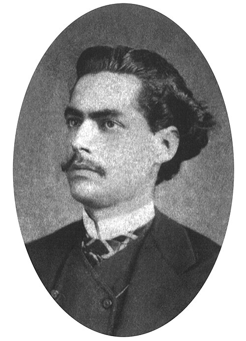

Você errou 4 de 6 questões deste conteúdo. Leia a explicação e confira se entendeu nos exercícios.
≈ 30 min
1EstudarVocê está aqui
2Praticar5 questões reais do banco
3Revisão7 dias depois da prática
≡Explicação
Onde o Romantismo fica no tempo
1601Barroco
1768Arcadismo
1836Romantismo
1881Realismo e Naturalismo
1893Simbolismo
1922Modernismo
Ano em que cada escola literária começa no Brasil.
O que foi
O Romantismo começa no Brasil em 1836, pouco depois da Independência, com Suspiros Poéticos e Saudades, de Gonçalves de Magalhães. O país buscava uma identidade própria, e a literatura respondeu valorizando a pátria, a natureza e o sentimento acima da razão.
As três gerações da poesia
1ª geraçãoNacionalista
Gonçalves Dias. O indígena como herói, a natureza e a saudade da pátria.
2ª geraçãoMal do século
Álvares de Azevedo. Amor, tédio, pessimismo e morte.
3ª geraçãoCondoreira
Castro Alves. Liberdade e denúncia da escravidão.
Leia o trecho

Castro Alves, por volta de 1870. Foto: Alberto Henschel (domínio público).
Senhor Deus dos desgraçados! Dizei-me vós, Senhor Deus! Se é loucura... se é verdade Tanto horror perante os céus?!
Castro Alves, "O Navio Negreiro" (1868)
Repare: o eu lírico fala com Deus quase em grito. As exclamações e a pergunta mostram indignação diante do tráfico de escravizados, 20 anos antes da abolição.
Pegadinhas comuns de prova
Indígena idealizado: no Romantismo ele é um herói nobre, não um retrato fiel dos povos indígenas.
Tema social não é Realismo: Castro Alves denuncia a escravidão, mas com tom exaltado e emotivo. Ele é romântico.
Não é só poesia: o Romantismo também tem romances, como Iracema, de José de Alencar.
1."Minha terra tem palmeiras, / Onde canta o Sabiá; / As aves, que aqui gorjeiam, / Não gorjeiam como lá." Nesses versos de Gonçalves Dias, predomina:
Longe do Brasil, o poeta compara a terra natal com o lugar onde está. É o nacionalismo da 1ª geração.
2.O pessimismo, o tédio e a atração pela morte, chamados de "mal do século", marcam a obra de:
Álvares de Azevedo é o principal nome da 2ª geração. Machado de Assis é do Realismo, e Cruz e Sousa, do Simbolismo.
3.Em "O Navio Negreiro", Castro Alves usa a poesia para:
A 3ª geração leva a poesia para a causa social. Castro Alves ficou conhecido como o "poeta dos escravos".
4.Em "Iracema", de José de Alencar, e em "I-Juca-Pirama", de Gonçalves Dias, o indígena é apresentado como:
É o indianismo: o indígena vira símbolo nacional, com valores parecidos com os do cavaleiro medieval.
5.A obra considerada marco inicial do Romantismo no Brasil é:
Foi publicada em 1836 por Gonçalves de Magalhães. Memórias Póstumas de Brás Cubas marca o Realismo, em 1881.
6.Uma característica central do Romantismo é:
É o subjetivismo: o sentimento de quem escreve vem antes da razão.
7.Castro Alves é chamado de poeta condoreiro porque:
O condor voa alto: a ave simboliza a liberdade e o olhar amplo dessa poesia de causas sociais.
8."A Moreninha" (1844), de Joaquim Manuel de Macedo, é um exemplo de romance:
A história se passa entre jovens da sociedade do Rio de Janeiro, por isso é um romance urbano.
9.A idealização da mulher, em geral pura e inatingível, é típica:
O Realismo faz o caminho oposto: mostra personagens com defeitos e contradições.
10.José de Alencar escreveu romances indianistas, urbanos e regionalistas. Com isso, ele buscava:
O Guarani é indianista, Senhora é urbano e O Gaúcho é regionalista: juntos, mostram várias faces do país.
Próximo passo
Agora pratique com questões reais
5 questões do banco, começando pelas mais simples.
Fora desta tela, só para comparar
Como um gráfico apareceria em Matemática
Preço e quantidade são diretamente proporcionais, então o gráfico é uma reta que sai do zero. Gráficos, esquemas e linhas do tempo são desenhados para cada explicação, sem depender de imagem de terceiros.